6.6.4. Условные графические обозначения на схемах электрических аппаратов
Комбинации реле, контакторов и других аппаратов могут образовывать довольно сложные системы управления, выполняющие определённые логические операции, состоящие из совокупности элементарных логических операций: И, ИЛИ, НЕ и др. Автоматическое управление применяется для пуска в ход, торможения, реверсирования, регулирования частоты вращения, выполнения заданной последовательности операций электропривода. Автоматическое управление осуществляется с помощью электрических аппаратов (ЭА), рассмотренных выше.
Условные графические обозначения контактов и элементов электромагнитных устройств, применяемых в схемах, приведены в табл. 6.1.
При изучении и чтении электрических схем необходимо учитывать их особенности:
- каждая схема имеет две электрические цепи: силовую, которая обычно выделяется жирными линиями, и цепь управления, изображаемая более тонкими линиями;
- все элементы ЭА обозначаются в соответствии с ГОСТ 2.755-74 (условное графическое обозначение некоторых элементов приведено в табл. 6.1);
- принадлежность элементов к одному ЭА устанавливается по единому для всех элементов буквенному и цифровому обозначению, например, КМ - контакты главного контактора КМ; КК1.1, КК1.2 - контакты теплового реле КК1, изображенные в двух местах схемы, и т. д.;
- на схемах все элементы (контакты, кнопочные выключатели и т. п.) показаны при отсутствии токов в катушках ЭА и при ненажатых кнопках.
Ниже рассматриваются некоторые типовые схемы автоматического управления электрическими двигателями.
Таблица 6.1
Условные графические обозначения, применяемые в схемах (ГОСТ 2.755-74)
| Наименование и буквенное обозначение | Графическое обозначение |
|---|---|
Контакты коммутационного устройства: а) замыкающий К1 или КК1, или КА1; |
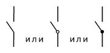 |
| б) замыкающий без самовозврата К2; с самовозвратом К3; для коммутации сильноточной цепи КМ4; с дугогасительным устройством КМ5; |
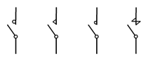 |
| в) размыкающий К6 или КК6, или КU6; |
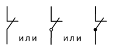 |
|
г) размыкающий без самовозврата К7; с самовозвратом К8; для коммутации сильноточной цепи KM9; с дугогасительным устройством КM10 |
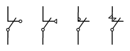 |
Катушка магнитных пускателей КМ1, контакторов KM2, реле и электромагнитов K1 |
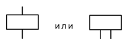 |
| Катушка с обмоткой минимального напряжения KU1; с обмоткой максимального тока KA |
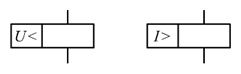 |
| Катушка электротеплового реле (с биметаллической пластинкой) КК1 |
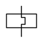 |
| Выключатель кнопочный (кнопка) с замыкающим контактом SB1; с выдержкой времени на размыкание SB2 |
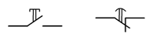 |
| Плавкий предохранитель FU1 |
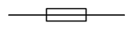 |
Выключатель трёхполюсный Q1; выключатель автоматический QF1 максимального тока |
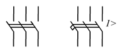 |
| Машина асинхронная, синхронная, постоянного тока |
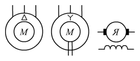 |